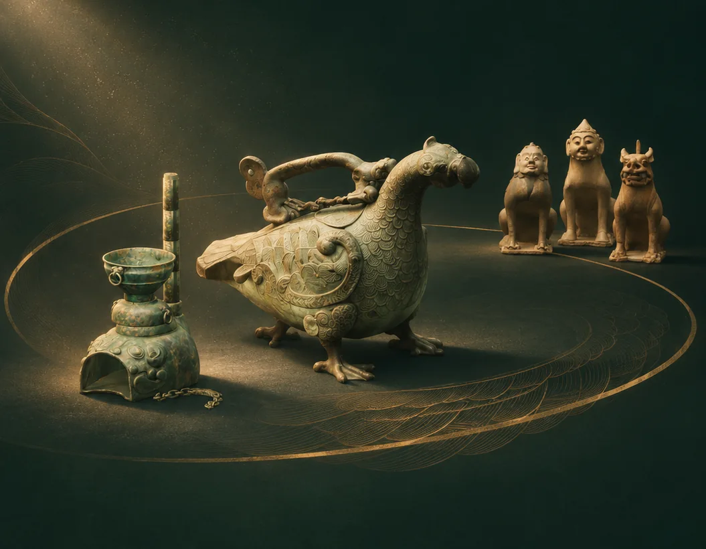
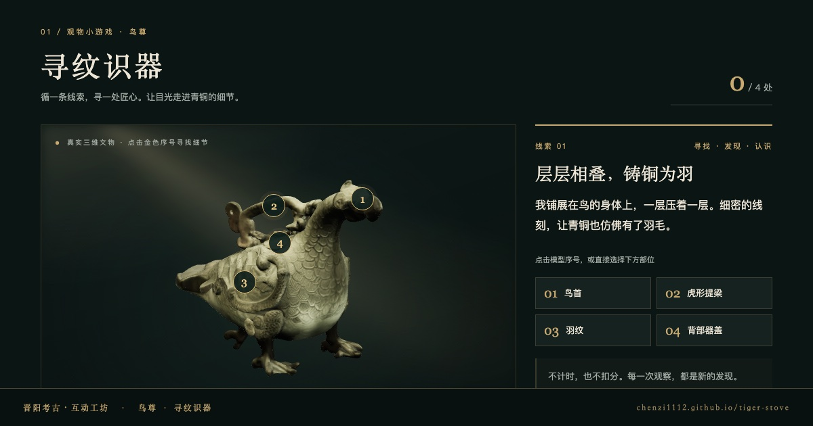
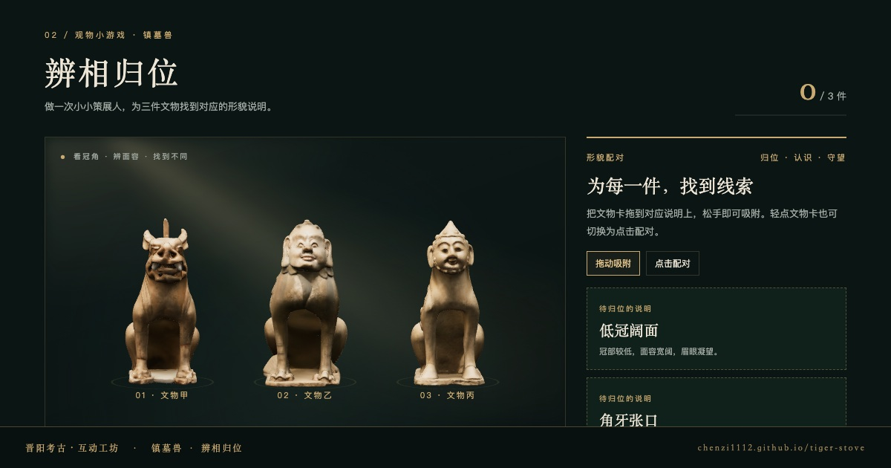

晋阳考古・数字展厅
穿越时光的相遇
从春秋青铜，到北齐陶塑。转动展台，走近文物的形与意。

正在准备三组文物
文物准备好后，即可开启探索
选择一件文物，开启三维探索
青铜器物专题
青铜凝羽，一尊生姿
转动展台，从虎形灶的随行烟火、鸟尊的青铜羽纹，到镇墓兽的凝望与残彩，选择一次探索。
目前开放虎形灶、鸟尊与三件北齐镇墓兽三个三维专题。可拖动转盘、点击文物或使用左右方向键切换，再点击“进入专题”。
晋阳考古・互动工坊
两局观物小游戏：循线索找出细节，或把形貌说明归位到对应文物。


请启用 JavaScript 查看转盘，或直接阅读 虎形灶专题、鸟尊专题、镇墓兽专题。